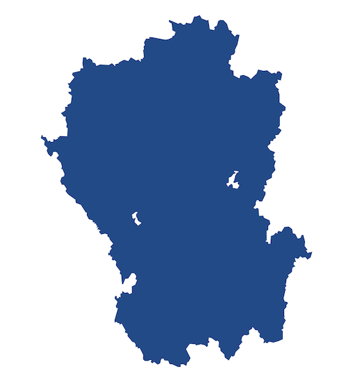
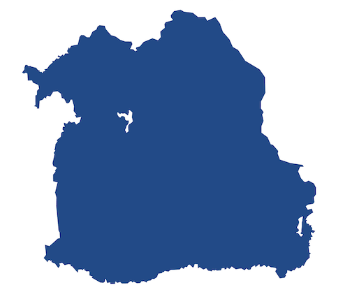
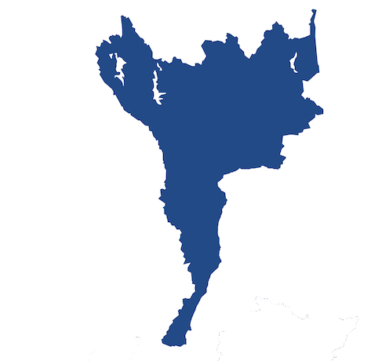
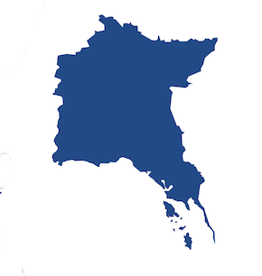
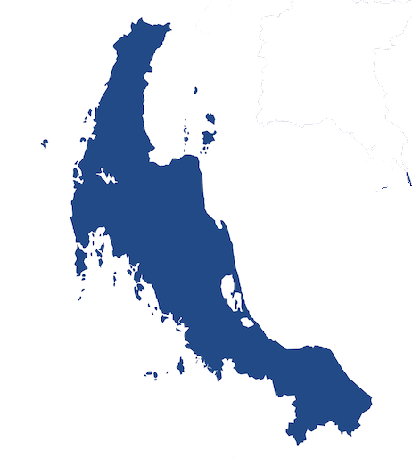

NORTHERN THAILAND

- Chiangrai Province
- Chiangmai Province
- Lampang Province
- Maehongson Province
- Phare Province
- Nan Province
NORTHEAST THAILAND

- Buriram Province
- Nakhonratchasima Province
- Chaiyaphum Province
- Khonkaen Province
- Udonthani Province
- Ubonratchathani Province
WESTERN AND CENTRAL THAILAND

- Bangkok Province
- Samutsongkhram Province
- Kanchanaburi Province
- Nakhonpathom Province
- Rachaburi Province
- Suphanburi Province
EASTERN THAILAND

- Chachoengsoa Province
- Chanthaburi Province
- Chonburi Province
- Rayoung Province
- Sakaeo Province
- Trat Province
SOUTHERN THAILAND

- Chumphon Province
- Nakhonsithammarat Province
- Narathiwat Province
- Prachuapkhirikhan Province
- Ranong Phangnga Phuket Province
- Yala Province